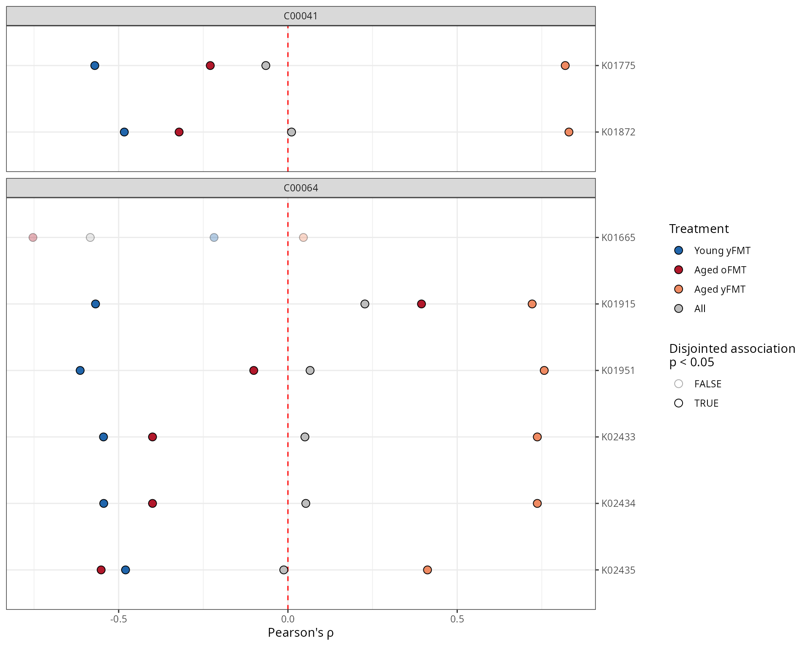

Introduction
The anansi package computes and compares the association
between the features of two ’omics datasets that are known to interact
based on a database such as KEGG. Studies including both microbiome and
metabolomics data are becoming more common. Often, it would be helpful
to integrate both datasets in order to see if they corroborate each
others patterns. All vs all association is imprecise and likely to yield
spurious associations. This package takes a knowledge-based approach to
constrain association search space, only considering metabolite-function
interactions that have been recorded in a pathway database. This package
also provides a framework to assess differential association.
While anansi is geared towards metabolite-function
interactions in the context of host-microbe interactions, it is
perfectly capable of handling any other pair of datasets where some
features interact canonically. A very early version of
anansi was used to generate “Extended Data Fig. 7” in that
paper.
Installation
# install and load anansi
# devtools::install_github("thomazbastiaanssen/anansi")
library(anansi)
# load ggplot2 and ggforce to plot results
library(ggplot2)
library(ggforce)
# Anansi supports parallelisation through the future.apply framework.
# You can call it like this:
# plan(multisession)
# load example data + metadata from FMT Aging study
data(FMT_data)Data preparation
The main anansi function expects data in the
anansiWeb format; Basically a list with exactly three
tables: The first table, tableY, should be a count table of
metabolites. The second table, tableX, should be a count
table of functions. Both tables should have columns as features and rows
as samples.
The third table should be a binary adjacency matrix with the column
names of tableY as rows and the column names of
tableX as columns. Such an adjacency matrix is provided in
the anansi library and is referred to as a dictionary
(because you use it to look up which metabolites interact with which
functions).
Though this example uses metabolites and functions,
anansi is able to handle any type of ’omics data, as long
as there is a dictionary available. Because of this, anansi uses the
type-naive nomenclature tableY and tableX. The
Y and X refer to the position these measurements will have in the linear
modeling framework:
\[Y \sim X \times {\text{covariates}}\]
A note on functional microbiome data
Two common questions in the host-microbiome field are “Who’s there?”
and “What are they doing?”. Techniques like 16S sequencing and shotgun
metagenomics sequencing are most commonly used to answer the first
question. The second question can be a bit more tricky - often we’ll
need functional inference software to address them. For 16S sequencing,
algorithms like PICRUSt2 and Piphillin can be used to infer function.
For shotgun metagenomics, HUMANn3 in the bioBakery suite can be
used.
All of these algorithms can produce functional count data in terms of
KEGG Orthologues (KOs). These tables can be directly plugged in to
anansi.
# Clean and CLR-transform the KEGG orthologue table.
# Only keep functions that are represented in the dictionary.
KOs <- FMT_KOs[row.names(FMT_KOs) %in% sort(unique(unlist(anansi_dic))), ]
# Cut the decimal part off.
KOs <- floor(KOs)
# Ensure all entires are numbers.
KOs <- apply(KOs, c(1, 2), function(x) as.numeric(as.character(x)))
# Remove all features with < 10% prevalence in the dataset.
KOs <- KOs[apply(KOs == 0, 1, sum) <= (ncol(KOs) * 0.90), ]
# Perform a centered log-ratio transformation on the functional count table.
KOs.exp <- clr_c(KOs)
# anansi expects samples to be rows and features to be columns.
t1 <- t(FMT_metab)
t2 <- t(KOs.exp)Weave a web🕸️
The weaveWeb() function can be used to parse the tables
that we prepared above into an anansiWeb object. The
anansiWeb format is a necessary input file for the main
anansi workflow. It allows anansi to keep
track of which features from the two input data sets should should be
considered as pairs.
With anansi, we provide a pre-built map between ko, cpd
and ec features of the KEGG database, but users can provide their own
maps. See
vignette on adjacency matrices.
Run anansi🕷️
The main workspider in this package is called anansi.
Generally, you want to give it three arguments. First, there’s
web, which is an anansiWeb object, such as the
one we generated in the above step. Second, there’s
formula, which should be a formula. For instance, to assess
differential associations between treatments, we use the formula
~Legend, provided we have a column with that name in our
metadata object, the Third argument.
anansi_out <- anansi(
web = web,
formula = ~Legend,
metadata = FMT_metadata,
adjust.method = "BH",
verbose = TRUE
)## Fitting least-squares for following model:
## ~ x + Legend + x:Legend## Running correlations for the following groups:
## Aged yFMT, Aged oFMT, Young yFMTSpin to a table📝
anansi returns a wide format table as an output. For
general reporting, we recommend sticking to the table format as it’s the
most legible.
library(tidyr)
# Use tidyr to wrangle the correlation r-values to a single column
anansiLong <- anansi_out |>
pivot_longer(starts_with("All") | contains("FMT")) |>
separate_wider_delim(name, delim = "_", names = c("cor_group", "param")) |>
pivot_wider(names_from = param, values_from = value)
# Now it's ready to be plugged into ggplot2, though let's clean up a bit more.
# Only consider interactions where the entire model fits well enough.
anansiLong <- anansiLong[anansiLong$full_q.values < 0.2, ]Plot the results
The long format can be helpful to plug the data into
ggplot2. Here, we recreate part of the results from the FMT
Aging study.
ggplot(anansiLong) +
# Define aesthetics
aes(
x = r.values, y = feature_X,
fill = cor_group, alpha = disjointed_Legend_p.values < 0.05
) +
# Make a vertical dashed red line at x = 0
geom_vline(xintercept = 0, linetype = "dashed", colour = "red") +
# Points show raw correlation coefficients
geom_point(shape = 21, size = 3) +
# facet per compound
ggforce::facet_col(~feature_Y, space = "free", scales = "free_y") +
# fix the scales, labels, theme and other layout
scale_y_discrete(limits = rev, position = "right") +
scale_alpha_manual(
values = c("TRUE" = 1, "FALSE" = 1 / 3),
"Disjointed association\np < 0.05"
) +
scale_fill_manual(
values = c(
"Young yFMT" = "#2166ac",
"Aged oFMT" = "#b2182b",
"Aged yFMT" = "#ef8a62",
"All" = "gray"
),
breaks = c("Young yFMT", "Aged oFMT", "Aged yFMT", "All"), "Treatment"
) +
theme_bw() +
ylab("") +
xlab("Pearson's \u03c1")
Session info
## R version 4.4.2 (2024-10-31)
## Platform: x86_64-pc-linux-gnu
## Running under: TUXEDO OS
##
## Matrix products: default
## BLAS: /usr/lib/x86_64-linux-gnu/blas/libblas.so.3.12.0
## LAPACK: /usr/lib/x86_64-linux-gnu/lapack/liblapack.so.3.12.0
##
## locale:
## [1] LC_CTYPE=en_GB.UTF-8 LC_NUMERIC=C
## [3] LC_TIME=en_GB.UTF-8 LC_COLLATE=en_GB.UTF-8
## [5] LC_MONETARY=en_GB.UTF-8 LC_MESSAGES=en_GB.UTF-8
## [7] LC_PAPER=en_GB.UTF-8 LC_NAME=C
## [9] LC_ADDRESS=C LC_TELEPHONE=C
## [11] LC_MEASUREMENT=en_GB.UTF-8 LC_IDENTIFICATION=C
##
## time zone: Europe/Amsterdam
## tzcode source: system (glibc)
##
## attached base packages:
## [1] stats graphics grDevices utils datasets methods base
##
## other attached packages:
## [1] tidyr_1.3.1 ggforce_0.4.2 ggplot2_3.5.1 anansi_0.6.0
## [5] BiocStyle_2.32.1
##
## loaded via a namespace (and not attached):
## [1] SummarizedExperiment_1.34.0 gtable_0.3.6
## [3] xfun_0.50 bslib_0.9.0
## [5] htmlwidgets_1.6.4 Biobase_2.66.0
## [7] lattice_0.22-6 vctrs_0.6.5
## [9] tools_4.4.2 generics_0.1.3
## [11] stats4_4.4.2 parallel_4.4.2
## [13] tibble_3.2.1 pkgconfig_2.0.3
## [15] Matrix_1.7-2 desc_1.4.3
## [17] S4Vectors_0.42.1 lifecycle_1.0.4
## [19] GenomeInfoDbData_1.2.12 stringr_1.5.1
## [21] farver_2.1.2 compiler_4.4.2
## [23] textshaping_1.0.0 munsell_0.5.1
## [25] codetools_0.2-20 GenomeInfoDb_1.40.1
## [27] htmltools_0.5.8.1 sass_0.4.9
## [29] yaml_2.3.10 pkgdown_2.1.1
## [31] pillar_1.10.1 crayon_1.5.3
## [33] jquerylib_0.1.4 MASS_7.3-64
## [35] DelayedArray_0.30.1 cachem_1.1.0
## [37] abind_1.4-8 parallelly_1.42.0
## [39] tidyselect_1.2.1 digest_0.6.37
## [41] stringi_1.8.4 future_1.34.0
## [43] purrr_1.0.4 dplyr_1.1.4
## [45] bookdown_0.42 listenv_0.9.1
## [47] labeling_0.4.3 polyclip_1.10-7
## [49] fastmap_1.2.0 grid_4.4.2
## [51] colorspace_2.1-1 cli_3.6.4
## [53] SparseArray_1.4.8 magrittr_2.0.3
## [55] S4Arrays_1.4.1 future.apply_1.11.3
## [57] withr_3.0.2 scales_1.3.0
## [59] UCSC.utils_1.0.0 rmarkdown_2.29
## [61] XVector_0.44.0 httr_1.4.7
## [63] matrixStats_1.5.0 globals_0.16.3
## [65] igraph_2.1.4 ragg_1.3.3
## [67] evaluate_1.0.3 knitr_1.49
## [69] GenomicRanges_1.56.2 IRanges_2.38.1
## [71] MultiAssayExperiment_1.33.1 rlang_1.1.5
## [73] Rcpp_1.0.14 glue_1.8.0
## [75] tweenr_2.0.3 BiocManager_1.30.25
## [77] BiocGenerics_0.50.0 rstudioapi_0.17.1
## [79] jsonlite_1.9.0 R6_2.6.1
## [81] MatrixGenerics_1.16.0 systemfonts_1.2.1
## [83] fs_1.6.5 zlibbioc_1.50.0